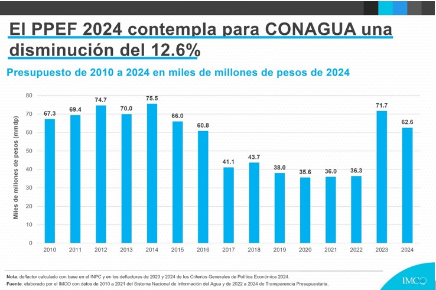

ESTADISTICAS DEL AGUA EN MÉXICO
Agua de pipa: Estados como Puebla (4.61%), Querétaro (4.1%), Baja California Sur (3.85%), Guerrero (3.82%) y Morelos (3.5%) presentan los mayores porcentajes de suministro de agua mediante pipas
Agua entubada que acarrean de otras viviendas: Tabasco (3.59%), Guerrero (2.69%), Sinaloa (2.32%), Morelos (2.3%) y Nayarit (2.15%) son las entidades con mayor porcentaje de suministro de agua entubada proveniente de otras viviendas
Agua pública (hidrante): Baja California Sur (2.2%), Guerrero (0.81%), Querétaro (0.61%) y Tamaulipas (0.49%) destacan en el suministro de agua pública o hidrante
Consumo total de agua por estado:
Según datos de 2024, Sinaloa lidera el consumo de agua en el país, empleando el 10.6% del total nacional.
Situación de sequía y almacenamiento de agua en presas:
En marzo de 2024, se observó que el 61.5% de los municipios mexicanos presentaban sequía, afectando al 76% del territorio nacional. Estados del norte, como Baja California, Baja California Sur, Coahuila, Nuevo León, Sonora y Tamaulipas, fueron los más afectados. Además, en el Estado de México, ocho presas se encontraban por debajo del 40% de su capacidad, lo que generó preocupación sobre el abastecimiento de agua en la región.
Iniciativas de conservación y protección hídrica:
En enero de 2025, la Ciudad de México, Morelos y el Estado de México se unieron para proteger el “Bosque de Agua”, un corredor forestal vital para el abastecimiento hídrico de la región. Esta colaboración busca combatir la tala ilegal, el cambio de uso de suelo y los incendios forestales, asegurando la conservación de este recurso esencial.
Estos datos reflejan la diversidad y complejidad de la situación hídrica en México, destacando tanto los desafíos como las estrategias implementadas para garantizar el acceso sostenible al agua en las distintas regiones del país.

 PROYECTO TRANSVERSAL
PROYECTO TRANSVERSAL